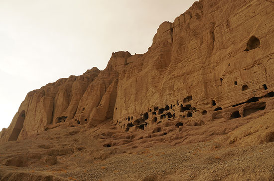
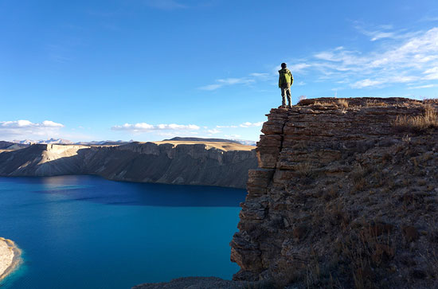
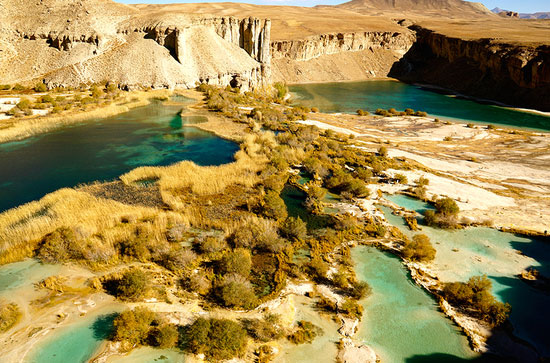
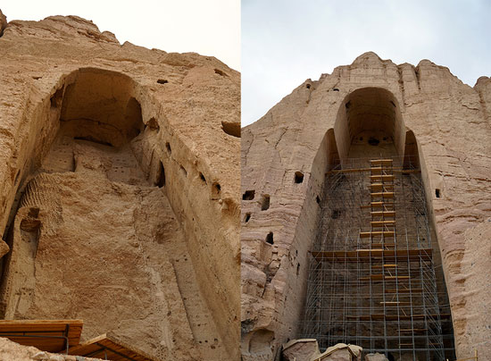
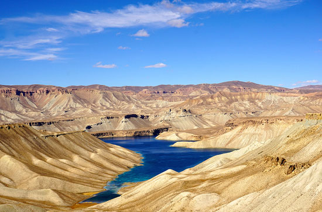

阿富汗的伤疤 震撼世界的痛与美
“当地时间26日，阿富汗东北部兴都库什地区发生7.8级强震。”当看到这条新闻时，第一反应是联系在阿富汗首都喀布尔的朋友，这个大学女教师告诉我地震时她正在上课，带着学生从五楼冲到了一楼，边跑边哭。说实话，我不知道该怎么安慰她。记得去年前往阿富汗完全是因为她的一句话：“我们国家新总统刚刚选举出来，我们国家会越来越好，生活会越来越好的。”当时被她那种质朴的期许打动，决定去看一看这个千疮百孔的国度。而今天，这个国度再次雪上加霜，7.8级的地震，震碎的楼房不要紧，千万不要将他们的希望都震碎。作为一个旁观者，唯有祝福。再次重温当时在阿富汗留下的图文，去看看这个带给我过美好的国家。祝福阿富汗，祝福那里的人们，真的愿灾害和痛苦远离那片土地！
摄影/北石
有些风景，在创伤面前才更显珍贵。
有些心境，在艰难过后才越发清晰。
所谓旅行，不仅要看到这个世界的美丽与精彩，也应该看到这个世界的伤疤与痛苦。所以，我带着些许好奇和担忧走进阿富汗，不曾想过在这里能见到其他国家那样的美景，更多的，是到这里看看战争后的人民，感受他们的真实生活。然而这世间的许多美丽，就因这不期而遇方显深刻。

摄影/北石
巴米扬于阿富汗，相当于一张很重要的名片。因为在那个小小的巴米扬镇上，曾经有过一座世界第三大的佛像，而使它更加让这个世界牵挂的是，2001年3月，阿富汗武装派别塔利班用了三天的时间，动用大炮、炸药以及火箭筒等各种战争武器，摧毁了巴米扬石窟群。这样的一个伤口，不仅成为了阿富汗苦难的一个代表，更成为了世界文化遗产的一处痛苦。

摄影/北石
于是我鼓足勇气决定前往，当地朋友都建议不能坐汽车去，因为沿途可能会有塔利班组织，他们喜好绑架外国人，虽然内心很想看一看真正的塔利班什么样子，但出于安全考虑，还是选择了从阿富汗首都喀布尔乘坐飞机前往。在经历了史上最严安检，获得了一张没有姓名没有航班只手写了座位号的登机牌后，经过了半个小时飞行，我顺利抵达这个期待已久的小镇。机场很小，一间小破屋就承担了所有的工作，能够想像，在条件如此艰难的阿富汗，这样的一座机场，或许当初只是为了巴米扬大佛而建。

巴米扬大佛：人类的智慧与野蛮
我们永远不要低估人类的聪明与智慧，但同时也不能低估人类的愚蠢与野蛮。如这一片废墟的巴米扬大佛，你无法想像在几千年前古老的人们在没有现代化机械的帮助下，是怎样靠着自己的双手和智慧修建出如此宏大的工程。而同时更无法想像当年的塔利班是抱着怎样愚蠢野蛮的心境用3天时间将这片人类遗产轰炸成废墟。

巴米扬大佛，位于阿富汗巴米扬省巴米扬市境内，深藏在兴都库什山脉里。曾经屹立在巴米扬石窟群中的两座大佛，一尊凿造于5世纪，高53米，着红色袈裟，俗称“西大佛”；一尊凿于1世纪，高37米，身披蓝色袈裟，俗称“东大佛”。阿富汗巴米扬峡谷因丰富的佛教洞窟遗址及曾经高达53米的石雕佛像而与中国敦煌石窟、印度阿旃陀石窟同被列为三佛教艺术最珍贵的遗产地。
巴米扬大佛离城镇非常近，步行就能抵达，远远望去，在那片荒芜的山脉里深深凿出了长约400米的石窟，黄色与红色交际出一片荒芜中的壮阔。慢慢走近，石窟变得越来越大，也感觉到自己慢慢变得渺小。我一步一步踩着黄土，如同踩着这沉睡的历史，走进那尊早已不见痕迹的大佛遗址，内心变得沉重。

终于，我站在了这尊曾经是世界第三大的佛像脚下，抬头望去，早已空空如也。虽然不见佛像，但从那庞大的石窟佛洞可以看出它曾经的庞大与气势。不知道是为了继续保护还是重建，人们在大佛的空洞里搭起了高高的铁架，四周都是散落的一些碎石，看着这些零零散散的古老石头，无法知道它们曾经来自于大佛的哪个部位，但它们的存在就如这里的空空的石洞一样，告诉世人这里曾经发生过什么。